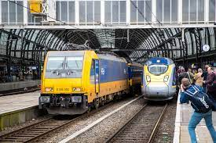
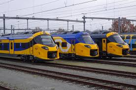
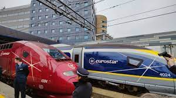
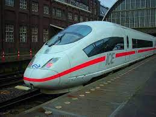
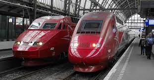

N.V. Nederlandse Spoorwegen (NS) is een Nederlandse spoorwegmaatschappij, waarvan de aandelen in handen zijn van de Nederlandse overheid.
Hogesnelheidslijn
Hier staan alle Hogesnelheidstreinen van Nederland, de meeste gaan ook naar het buiteland;


aantal:
Bouwjaar:
99
2020
ICNG
De Intercity Nieuwe Generatie (afgekort ICNG, bijgenaamd 'Wesp') is een type enkeldekstreinstellen van de
Nederlandse Spoorwegen (NS) dat in 2023 in dienst is gekomen. Ze zijn bedoeld voor het intercitynetwerk en
moeten ouder materieel zoals de oudste ICMm's en de ICRm vervangen. Ze halen hogere
snelheden en moeten de groei van het aantal reizigers opvangen.
Ze zullen worden ingezet op het hoofdrailnet, waaronder de HSL-Zuid, waar ze materieel vervangen dat
noodgedwongen in plaats van de mislukte V250 ('Fyra') reed.

aantal:
Bouwjaar:
17
2013-2015
Eurostar
De Eurostar is een hogesnelheidstreindienst die Parijs, Londen, Brussel en Amsterdam met elkaar verbindt.
Eurostar begon in 1994 met een dienst tussen Londen enerzijds en Parijs en Brussel anderzijds.
De Eurostar Blue maakt gebruik van de Kanaaltunnel die onder het Kanaal door loopt. De treindienst maakt
grotendeels gebruik van de mede hiervoor aangelegde hogesnelheidslijnen. Sinds 14 november 2007 is het Britse
hogesnelheidsgedeelte van het traject ook voltooid en kan de Eurostar op volle snelheid de drie steden met
elkaar verbinden.
Intercity direct is de treindienst Amsterdam – Breda en tussen Amsterdam en Brussel Zuid-Midi via de HSL-Zuid. De maximumsnelheid is 160 km per uur.
De treindienst valt sinds 1 januari 2015 onder de concessie voor het hoofdrailnet 2015-2025, verleend aan de Nederlandse Spoorwegen (NS), daarvoor onder de Vervoerconcessie voor het hogesnelheidsnet verleend aan High Speed Alliance.

aantal:
Bouwjaar:
17
1997-2000
ICE3
De ICE 3 is een type hogesnelheidstreinstel van de Deutsche Bahn AG. De treinstellen ICE 3 (Baureihe 403) worden sinds 2000 in de reguliere dienst ingezet. Deze kan maximaal 330 km/h rijden en grotere stijgingen aan (4% in plaats van 2%) dan zijn voorgangers. Om het daarvoor noodzakelijke aandrijfvermogen te kunnen onderbrengen, heeft de trein geen motorwagen zoals zijn voorgangers, maar zijn de elektrische installatie en motoren (8000 kW) geheel onder de vloer ondergebracht.
Hier onder staat een verouderde Hogesnelheidstrein, die die pas geleden uit dienst is gegaan;

aantal:
Bouwjaar:
17
1996-1997
Thalys (nu overgenomen door Eurostar)
Thalys was tot en met september 2023 de merknaam van een netwerk van treindiensten op het hogesnelheidsnetwerk tussen Frankrijk, België, Nederland en Duitsland, die na die datum verdergaan onder de merknaam Eurostar. Deze treindiensten werden uitgebaat door de zusterbedrijven Thalys International en THI Factory, die vanaf april 2022 deel uitmaken van het fusiebedrijf Eurostar Group.